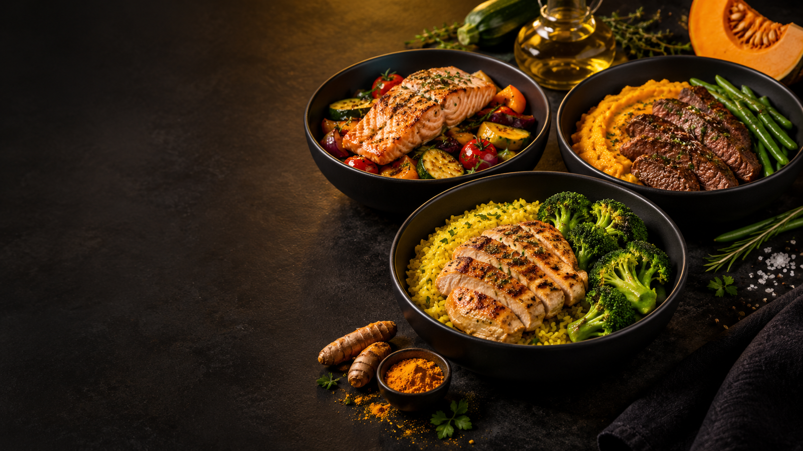
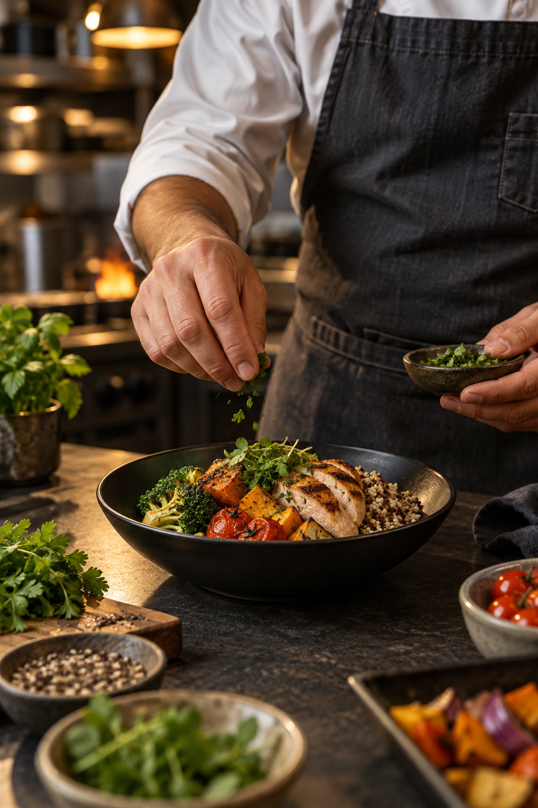

PRATICIDADE REAL01
6min
Do freezer
à mesa.
Menos tempo preparando. Mais tempo vivendo o que importa.
Nutrição descomplicada para quem quer comer bem, viver mais e fazer acontecer — todos os dias.


anos tornando a boa alimentação mais simples.
A Clean Foods nasceu com uma missão muito clara: transformar a alimentação equilibrada em algo prático, saboroso e possível.
Desde 2015, unimos curadoria técnica e ingredientes selecionados para criar refeições que cabem na rotina de quem busca bem-estar e performance.
Mais do que marmitas congeladas, entregamos uma escolha inteligente: você cuida do seu dia — a gente cuida da sua refeição.
Uma refeição gostosa, equilibrada e pronta quando você precisa. Sem discurso complicado. Sem tempo perdido.
Menos tempo preparando. Mais tempo vivendo o que importa.
Sem conservantes, sem glúten e sem lactose.
Receitas pensadas para diferentes objetivos e rotinas.
Praticidade preservada para o momento certo.
Opções pensadas para diferentes momentos do seu dia — sempre com o padrão Clean Foods.
Fale com a nossa equipe para encontrar o ponto de venda mais próximo ou descobrir como levar a Clean Foods para a sua região.
Leve comida de verdade para a sua cidade e faça parte da rede Clean Foods.